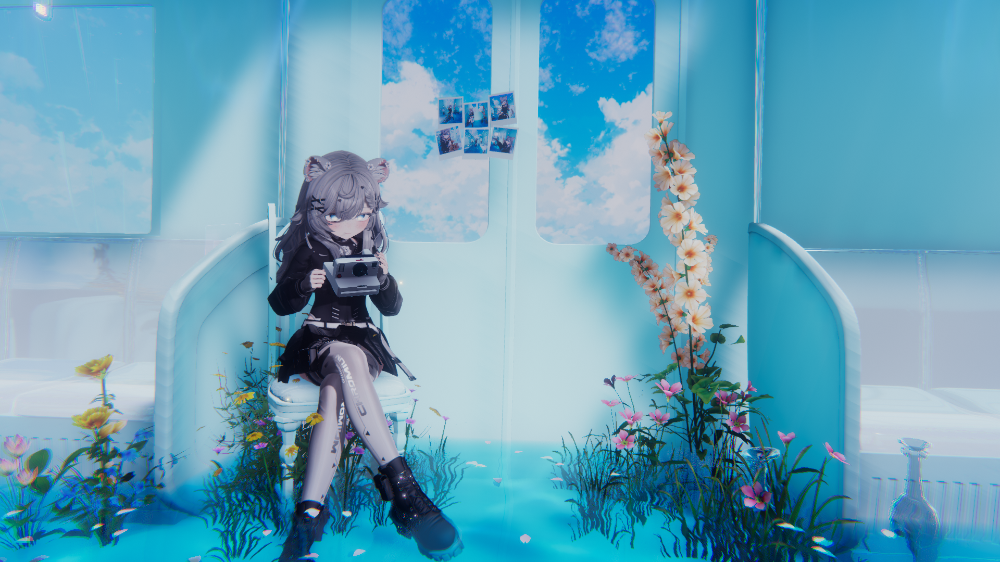
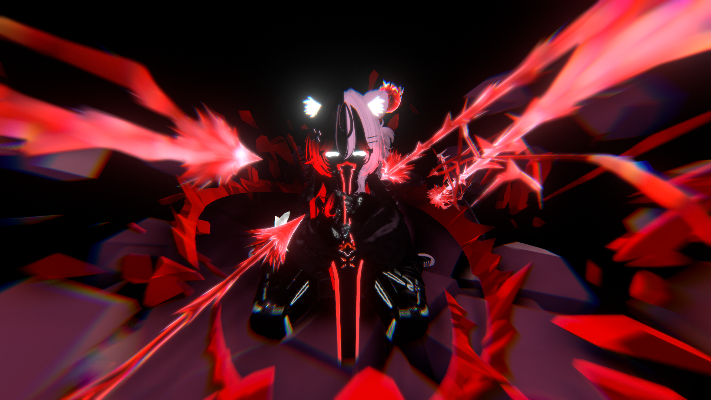
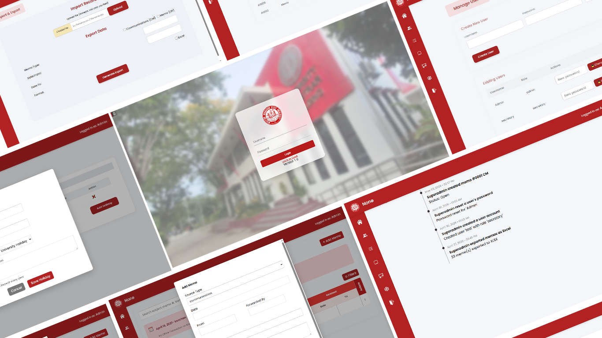
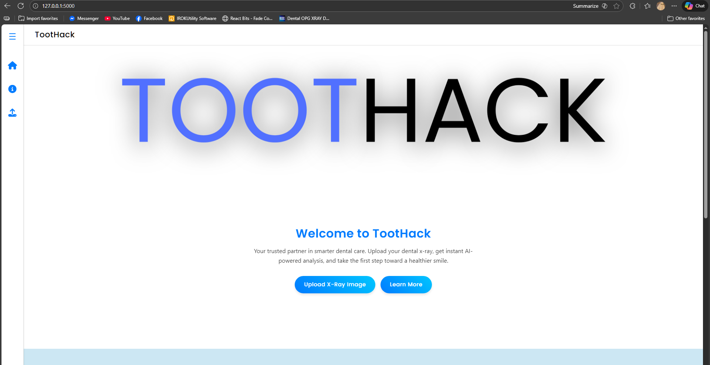

04
Photography



SYSTEM STATUS: ONLINE
I build modern web applications, backend systems, and database-driven platforms focused on performance, functionality, and clean user experiences.
> initializing portfolio...
> backend systems loaded
> database modules connected
> status: building modern applications
> whoami
backend developer / php / laravel / photographer
I mainly focus on backend development, building web applications with database management, authentication systems, CRUD operations, and server-side functionality.
While backend development is my strongest area, I also work with frontend technologies to create responsive and complete full-stack applications using PHP, Laravel, MySQL, HTML, CSS, and JavaScript.
Outside programming, I enjoy photography — especially street, cinematic, night, and star-focused shots — along with virtual photography inside games and VR environments.
PHP / Laravel / Flask
MySQL / CRUD Systems
Responsive Web Interfaces
Street, Stars & Virtual
PHP
HTML5
MySQL
Laravel
CRUD Operations
Visual Studio Code
Basic Networking
Data Entry
Git
Microsoft Office
Troubleshooting

Desktop-based HR management system with authentication, memo handling, backup systems, and Electron integration.

Managed and maintained a local computer shop, handling hardware maintenance, software setup, troubleshooting, printing services, encoding, and client data entry tasks.
Role:
Maintenance Technician /
Assistant Operator / Owner
Assisted students and professors in laboratory apparatus preparation, chemical handling, stock organization, and maintaining the cleanliness and order of the stockroom.
Role: Student Assistant
Developed a lightweight application for a private client to streamline templated Microsoft Word input workflows, helping reduce formatting mistakes and accidental deletion of fixed labels and document structures.
The system simplified repetitive encoding tasks and improved consistency in generated documents.
Role: Developer / Workflow Automation
Served as an HR intern at Western Mindanao State University, working as a full stack developer and team leader for internal HR systems.
Led the development of the HR Communication Logger, a system designed to streamline HR communication tracking, memo handling, organization, and workflow management.
Role: Full Stack Developer / Team Leader


Interested in working together, collaborating, or discussing development and creative projects?
Establish Connectionabdurahmanhaji06@email.com
+63 955 592 825
Zamboanga City, Philippines